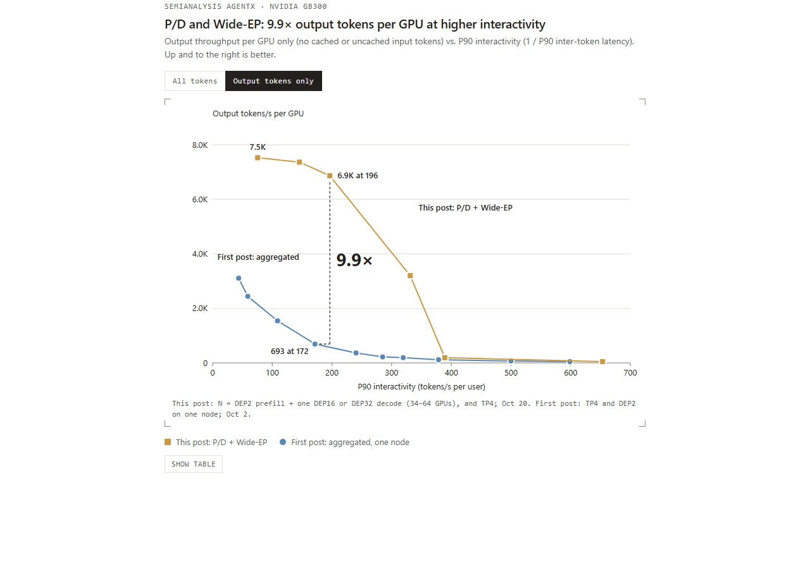
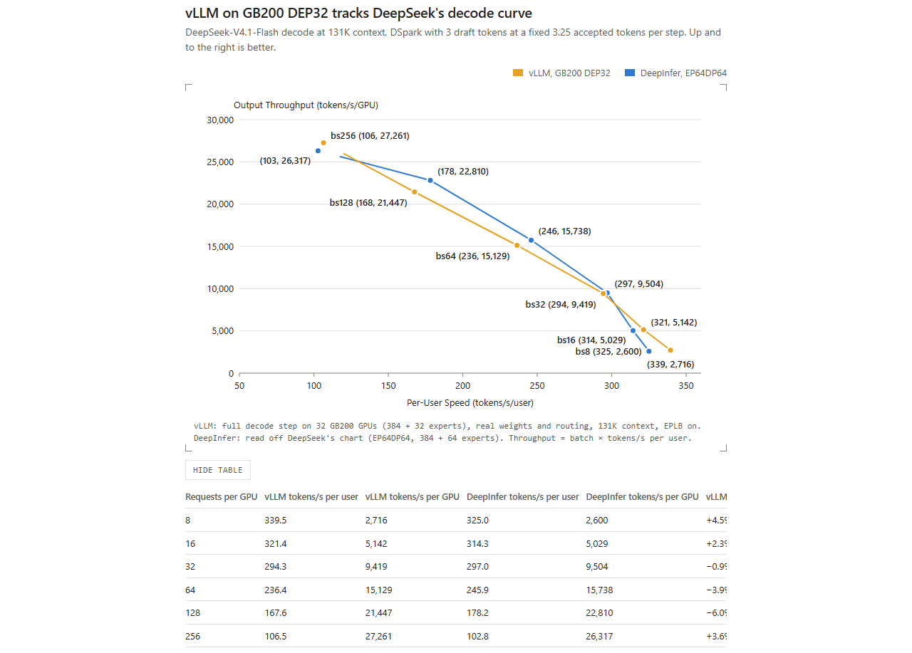
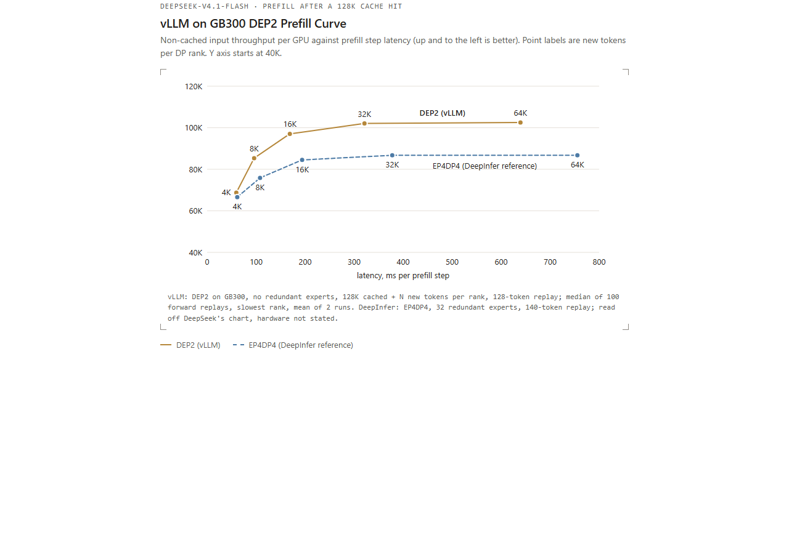
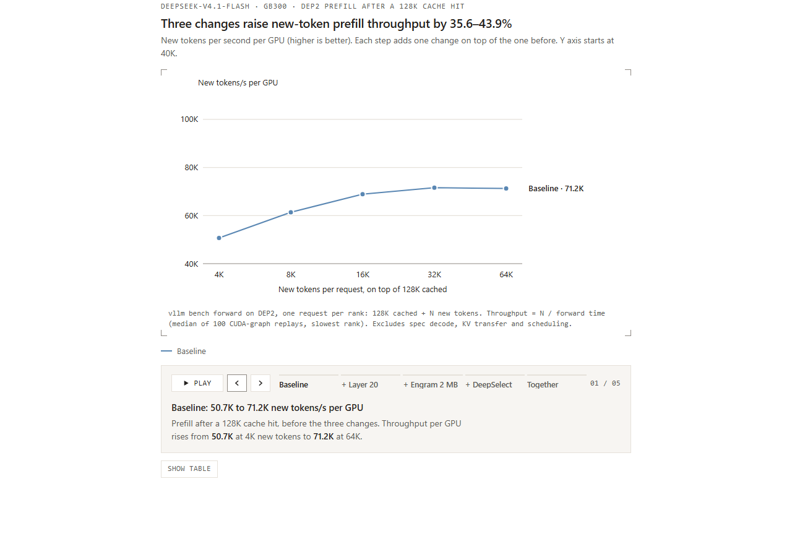
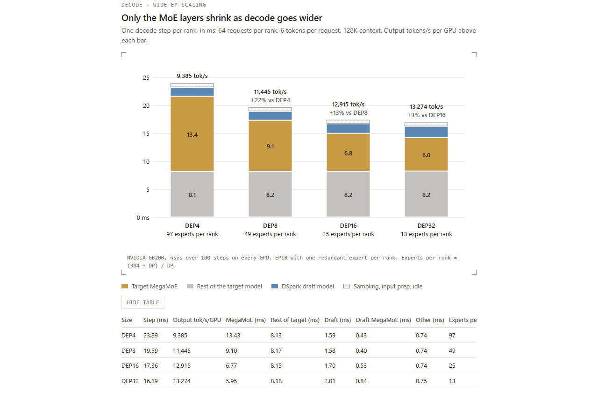
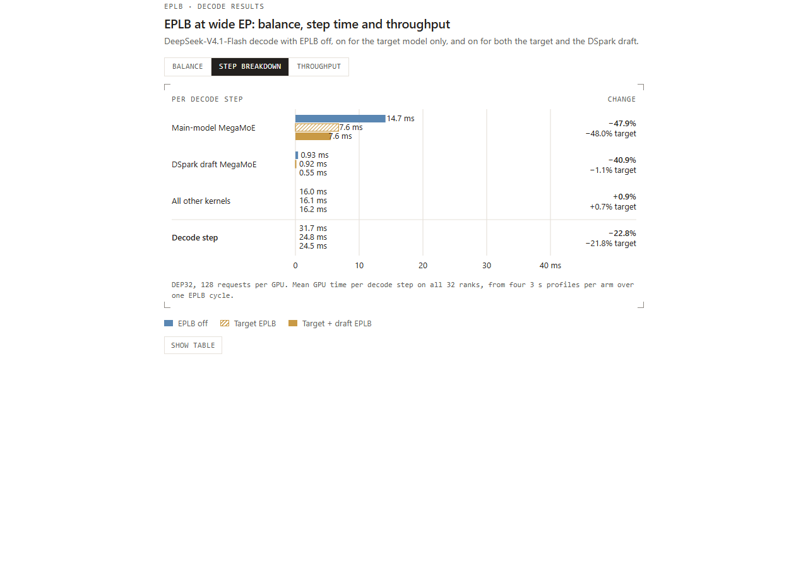
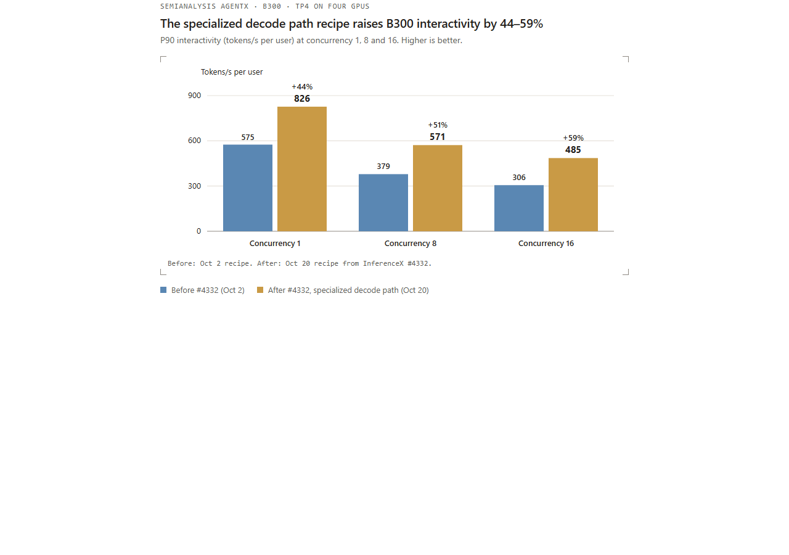

**要点速览：**在一套 NVIDIA GB300 NVL72 机架上，vLLM 通过预填充/解码分离（P/D disaggregation）和宽专家并行（Wide-EP）服务 DeepSeek-V4.1-Flash。在 SemiAnalysis AgentX 基准上，当 P90 单用户速度为 196 token/s 时，每张 GPU 达到 954K token/s，是上一篇文章单节点结果的 7.9 倍；按 DeepSeek 的非高峰价格计算，每 GPU 小时成本为 38.96 美元。专用解码路径的单用户速度达到 826 token/s。与 DeepSeek 自研引擎 DeepInfer 相比，vLLM 在批量大小 8～256 的解码吞吐量差距不超过 6%，预填充曲线也与 DeepInfer 公布的结果保持一致。
这些效率来自对 vLLM 现有组件的针对性工程优化，并以 DeepSeek 开源内核为基础。本文介绍性能研究、逐项拆解优化，并总结以下经验：
- 通用推理引擎可以匹配模型专用引擎
- 优化之前要先理解模型
- 小规模 DEP 实例最适合预填充
- 配合 EPLB 的 Wide-EP 解码具有良好扩展性
- 达到 NVL72 规模后，CPU 开销变得至关重要
- 专用解码路径可以解锁低延迟性能
**术语：*DEPn* 表示在 n 张 GPU 上使用数据并行注意力和专家并行。目标前向（target forward）是主模型在每个解码步骤中的完整前向传播，用于验证草稿 token 并产生输出；草稿前向（draft forward）是 DSpark 草稿模型的完整前向传播，用于提出下一步 token。
性能概览
展开图 1 静态预览

图 1：NVIDIA GB300 NVL72 上的 SemiAnalysis AgentX。采用 P/D 分离和 Wide-EP 的 vLLM（金色）相比上一篇文章中的聚合式单节点结果，吞吐量进一步提高 7.9 倍。吞吐量包括缓存命中的输入、未缓存输入和输出 token。
与 DeepInfer 对比
DeepInfer 是 DeepSeek 本周发布的 DeepSeek-V4.1-Flash 自研推理引擎，目前为离线引擎，并公布了预填充与解码曲线。它是该模型最相关的参考，因此在介绍优化前，先比较 vLLM 与 DeepInfer 的性能。
**解码。**在 DeepSeek 的解码配置下（131K 上下文、nextn=3），GB200 上的 vLLM 在批量大小 8～256 范围内，吞吐量与 DeepInfer 公布结果的差距不超过 6%（图 2）。
展开图 2 静态预览

图 2：131K 上下文、nextn=3 条件下，每张 GPU 的解码输出吞吐量与批量大小。比较 GB200 上的 vLLM 与从 DeepInfer README 图表读取的公布结果。
**预填充。**DeepInfer 公布的预填充曲线使用 EP4DP4、32 个冗余专家和 140-token 有界重放，图表未说明硬件。我们的运行使用 GB300 上的 DEP2，不使用冗余专家，采用 128-token 重放和自行生成的提示词。由于配置不同，我们不会把两条曲线的差距解释为引擎间加速。图 3 表明，在 DeepInfer 公布的测试范围内，vLLM 的 DEP2 预填充曲线与 DeepSeek 自研引擎基本一致。
展开图 3 静态预览

图 3：预填充吞吐量与新增 token 数。比较 GB300 上的 vLLM DEP2 与 DeepInfer 公布的曲线；后者采用 EP4DP4、32 个冗余专家和 140-token 重放，硬件未说明。
两个引擎表现接近，是因为双方在多个方向上共享技术渊源。DeepInfer 最初构建在 vLLM 之上，而 vLLM 也持续集成 DeepSeek 库中的 MegaAttn、MegaMoE、Mega-mHC 等内核，并围绕这些内核广泛优化其余服务栈。DeepInfer 面向单一模型和离线模式；同一份 vLLM 构建则能够在线服务该模型，通过 P/D 分离与 Wide-EP 扩展到完整 NVL72 机架。下文介绍这方面的工作。
深入底层：性能从何而来
先测量和理解模型
在调优前，我们首先量化 DeepSeek-V4.1-Flash 的高效架构设计：
- **KV 缓存占用很小。**借助跨层 KV 共享和 FP4 压缩，全局 KV 缓存每个 token 只需 890 字节，详见 DeepSeek-V4.1-Flash 技术报告。
- **注意力计算轻量。**第 2、8 和 14 层对全上下文索引使用 2 倍压缩。启用有界重放后，第 20 层为所有 token 写入全局 KV，但只为最后 128 个 token 运行索引和注意力；第 21～39 层也只处理这些 token。
- **即使上下文很长，解码仍受 MoE 限制。**在 128K 上下文、DEP4 解码且每个 rank 有 64 个请求时，MoE 占目标步骤的 62%，注意力和索引器合计仅占 13%。
下表是在 GB300 上以 DEP32 测量的目标模型前向时间：每个 rank 有 16 个请求，每个请求处理 6 个 token（1 个当前 token 加 5 个 DSpark 草稿 token），所有请求上下文长度相同。从 128K 增加到 855K，上下文扩大 6.7 倍，目标模型解码延迟只增加 0.6 ms（+7%）。
| 每个请求的上下文 | 64K | 128K | 256K | 512K | 855K |
|---|---|---|---|---|---|
| 目标前向时间（ms） | 8.86 | 8.93 | 9.03 | 9.25 | 9.53 |
| 相对 128K | −0.8% | – | +1.1% | +3.6% | +6.7% |
这些特性决定了后续优化策略：
- **预填充应使用较小的 DEP 规模。**即使 B300 或 GB300 上的 DEP2 实例，也能同时容纳模型权重和大量会话的 KV 缓存。更小的 world size 会显著简化 DP/EP 负载均衡。
- **KV 容量很少限制批量大小。**KV 缓存可以轻松装入 HBM，因此可以把各项操作推向计算或内存带宽极限，不必围绕 KV 容量设计规避方案；测试扫描中也没有抢占或 KV 缓存压力，结果更一致、噪声更低。
- **Wide-EP 适合解码。**MegaMoE 解码受权重读取限制，扩大 EP 可以直接降低这项占主导地位的 MoE 成本。
- **解码 DP 负载均衡更简单。**该模型的解码步骤时间随上下文长度变化很小，所以 DP 负载均衡可以简化为按每个 rank 的请求数选择最低负载者。
- **合成工作负载仍能代表解码性能。**使用平均输入和输出长度，即可在不重放完整智能体轨迹的情况下获得良好估算。
测量方法
在不过度复杂化方法的前提下准确测量性能并不容易。我们把问题拆成两部分：一个预填充或解码步骤本身应花多少时间，以及 DP 和 EP 不均衡会引入多少额外开销。
- 预填充和解码步骤时间。
vllm bench forward（#61339）通过真实execute_model路径，跨 DP 和 EP rank 测量指定预填充或解码批次的模型前向时间。它只测量 GPU 时间，并提供干净的 trace。vLLM 的DecodeBenchConnector则在给定并发度下测量引擎级端到端解码性能。GPU 单独时间与服务步骤时间的差距可揭示意外开销。 - **预填充 DP 不均衡：mirror 与 lag 重放。**智能体 trace 每次运行都不同，很难单独隔离 DP 不均衡。因此我们在每个 DP rank 上重放相同请求。mirror 运行中，所有 rank 同时接收请求；lag 运行中，rank
r延迟r × 5秒接收同一批请求，使各 rank 进度错开但总工作量相同。两种运行的差异就是 DP 不均衡成本。 - **解码 EP 不均衡：真实路由与均匀路由。**对每个 MoE 层，我们把均衡度定义为每一步以及 EPLB 窗口内“rank 平均负载 ÷ rank 最大负载”。均衡参考使用均匀随机路由运行同一解码批次。该参考仍存在采样噪声：DEP32 且每张 GPU 72 个请求时，均匀路由下目标模型（top-6 路由）均衡度约为 0.96，草稿模型（top-3）约为 0.94。真实路由与均匀路由的差距是专家均衡理论上最多可恢复的空间，EPLB 运行则表明实际恢复了多少。
预填充：DEP2 表现最佳
如前所述，较小的 DEP 规模很适合预填充。在并发度 256 的 AgentX 纯预填充测试中，DEP4 的每 GPU 吞吐量只有 DEP2 的 83%（53.3K 对 64.4K token/s）。关闭前缀缓存后的 mirror 与 lag 重放表明，差距来自 DP 不均衡：当各 rank 进度错开时，DEP4 吞吐量下降 13.6%。
| 每个实例的预填充吞吐量（token/s） | mirror（均衡） | lag（不均衡） | 损失 |
|---|---|---|---|
| DEP2 | 138.7K | 130.5K | 5.9% |
| DEP4 | 267.6K | 231.1K | 13.6% |
这些数据在较早的构建版本上测得；不均衡成本是 DEP 规模的特性，而不是内核的特性。因此 DEP2 成为我们的简单默认选择。
Trace 背后的优化
上一篇文章介绍了大量预填充优化。更干净的 trace 帮助我们找出剩余瓶颈，尤其是随上下文长度增长的部分。例如，在两张 GB300 GPU 上，8K-token 预填充在没有历史上下文时耗时 87.9 ms，而存在 512K 缓存上下文时为 189.4 ms。我们又解决了三项瓶颈：
- 把 SWA 有界重放扩展到第 20 层（#59894）：32K 新 token 时提升 19.9%。此前第 21～39 层已限制为最后 128 个 token，但第 20 层仍为所有新 token 运行索引器。现在第 20 层仍为全部 token 写 KV，其余计算只在 128-token 重放批次上运行。4K 时提升 10.1%，64K 时提升 23.1%。
- 共享 Engram 主机表使用 2 MB 页面（#62359）：32K 时再提升 2.8%。Engram 会随机读取 DP rank 间共享的主机表。此前
/dev/shm映射使用 64 KB GPU 页面，造成频繁 GPU TLB miss。改为 host-NUMA cuMem 分配后可使用 2 MB GPU 页面。 - 预填充索引器使用 DeepSelect top-k（#62240）：32K 时再提升 15.6%。索引器现在像解码路径一样使用 DeepSelect 排序候选块；需要排序的 key 越多，收益越大，64K 时提升 15.2%。
这些改动叠加在 128K 缓存前缀之上，使 4K～64K 新 token 的预填充吞吐量提升 35.6%～43.9%。32K 时综合提升 42.5%；64K 时从 71.2K 增至 102.5K token/s/GPU（+43.9%）。
展开图 4 静态预览

图 4：128K 缓存命中后，DEP2 每张 GPU 的新 token 预填充吞吐量；依次加入第 20 层重放、Engram 2 MB 页面和 DeepSelect top-k。
解码：扩展 Wide-EP，并通过 EPLB 均衡专家
在解码侧，Wide-EP 配合专家并行负载均衡（Expert Parallelism Load Balancer，EPLB）已是成熟做法，DeepSeek 的推理系统概览对此有所介绍。vLLM 也已支持两者一段时间。本文重点介绍新的发现和实践经验。
Wide-EP 的扩展性
我们在 128K 上下文、每张 GPU 64 个请求且启用 EPLB 的条件下，将解码从 DEP4 扩展到 DEP32。目标模型 MegaMoE 时间从 13.4 ms 降至 6.0 ms，因为每个 rank 保存的专家更少，其余工作维持在约 10 ms。因此，每张 GPU 的吞吐量增益会逐渐递减；到 DEP32 时，草稿模型的通信开销也开始抵消更宽并行带来的收益。
展开图 5 静态预览

图 5：NVIDIA GB200 上，在 128K 上下文、每张 GPU 64 个请求时，从 DEP4 到 DEP32 的每 rank 解码步骤时间，以及每张 GPU 的输出吞吐量。
EPLB
我们让 EPLB 每 3,000 步重新排列一次专家，并依据此前 1,000 步的负载做决策。EPLB 将目标模型的均衡度从 0.35 提高到 0.94，将草稿模型从 0.21 提高到 0.89，分别恢复了与均匀路由差距的约 97% 和 93%。
展开图 6 静态预览

图 6：GB300 NVL72 上的解码，对比关闭 EPLB、仅为目标模型启用 EPLB，以及同时为目标模型和 DSpark 草稿启用 EPLB。选项卡分别显示逐步均衡度、DEP32 每步时间分解和吞吐量。吞吐量为三次运行均值，柱形范围表示波动。
两项改动让这一方案可行。#62009 引入基于 NVLink 的 symm_mem 后端，可以在不中断解码的情况下用不到一秒重新均衡整个 DEP32；它还把 EPLB 的副本映射和负载记录融合进 MegaMoE 内核，每步节省约 0.2 ms，并从解码循环中移除主机同步。#61395 则支持在目标模型和草稿模型结构不同的情况下使用 EPLB。DSpark 草稿模型有 128 个路由专家并使用 top-3 路由，目标模型有 384 个专家并使用 top-6；因此 EPLB 会分别跟踪两个模型的专家位置和负载，并同时重新均衡。
克服快速大规模解码中的 CPU 开销
Wide-EP 解码会在每层同步全部 rank，因此任何一个较慢的 rank 都会拖住整个实例。异步调度在小规模下可以很好地隐藏 CPU 开销，但 rank 数增多后会更困难：GPU 步骤变短，留给 CPU 工作的余量更少；同时某个 rank 落后的概率也更高。
实践中，未经优化的 DEP32 比 DEP16 更慢（每步 17.57 ms 对 13.84 ms），尽管其 GPU 执行时间快 1.1 ms。下表列出我们发现的全部原因，按影响排序。各项效果来自不同配置，因此每行都标出自己的测试条件。
| 原因 | 修复 | PR | 效果 | 配置 |
|---|---|---|---|---|
| KV 读取在解码工作线程上同步提交 | NIXL push 配合 UCX scatter-gather；把打包后的 KV 行作为一个 NIXL region 发送 | NIXL push 连接器、#61121 | 每 GPU 141K → 440K token/s；P90 单用户速度约 40 → 159 token/s | GB300、8P1D、并发 3,072 |
| Gloo all-reduce 延迟随 rank 数线性增长 | 递归倍增 CPU all-reduce | #61767、基于 #60267 | 每步 DP 同步 10.8 → 1.5 ms；步骤 16.10 → 13.15 ms | DEP32 解码 |
| 准入突发：单步最多加入 140 个请求 | 可选限制每步最多加载 4 个新 KV | #61725 | 每 GPU 460K → 516K token/s；P90 109 → 153 token/s | GB300、7P1D、并发 4,800，同时启用另外两项 CPU 修复 |
| 准入工作随提示词长度增长 | 提示词用单个 int32 缓冲区表示；跳过滑动窗口块表中的空块；分块提示词复制内核 | #59908、#62702、#61724、#62698 | 855K 提示词的每次准入 CPU 时间从 38.8 → 6.0 ms | 引擎微基准 |
低延迟：面向小批量的专用解码路径
我们还扩展了 DeepSeek-V4.1-Flash 的低延迟内核支持（#61868 和 #61869），延续此前 Kimi K3 文章中的工作。在真实 AgentX 会话上，专用解码路径使用四张 B300 GPU 时，单用户 P90 速度达到 826 token/s，比标准解码路径的 575 token/s 高 44%。
展开图 7 静态预览

图 7：四张 B300 GPU 上使用 TP4，在并发度 1、8、16 时运行 SemiAnalysis AgentX；对比 InferenceX #4332 切换到专用解码路径前后的 P90 交互速度。
致谢
感谢 DeepSeek 开源并分享 DeepSeek-V4.1-Flash 及其优化内核，为本项工作奠定基础；也感谢其发布 DeepInfer 与性能结果，为我们提供了有价值的学习和比较基准。感谢 SemiAnalysis 提供 AgentX 基准平台和各项支持。
特别感谢 NVIDIA 的 Pei Li、Hanjie Qiu、Lisa Wang、Yaoyao Ding、Rohit Nagraj 和 Xin Li 在性能优化上的密切合作，对 vLLM 与 Dynamo 的持续支持，以及对 AgentX 提交的协助。也感谢 vLLM 社区的 Canlin Guo 提供有价值的预填充优化。
本项工作由 Inferact 主导。